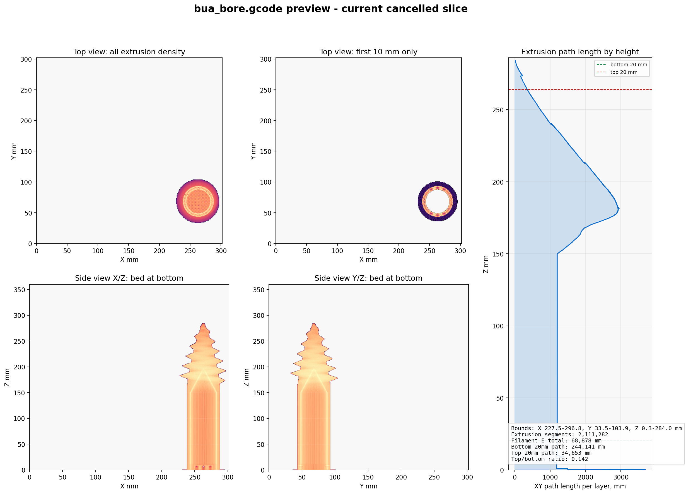

bua_bore G-code Preview
Corrected heavy-first orientation for bua_bore_heavy_first_supported.gcode.
Print state checked before publishing: OctoPrint was idle. This page is visualization only.
Corrected Supported G-code
Model extrusion
Build-plate support

Bounds
80.6 x 80.6 x 284.0 mm
Model path
3,856,607 mm
Support path
386,866 mm
Slicer estimate
1d 6h 23m
Comparison
Corrected: heavy/complex end starts at the bed with support.
Canceled: long cylindrical section started first, complex end was high in Z.
